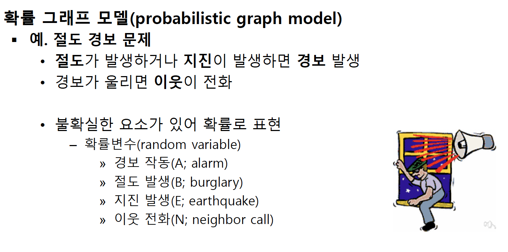

20221108
확률 그래프 모델 (probabilistic graph model)
확률 이론과 그래프 이론을 결합하여 확률분포 (probability distribution)를 표현하고, 관심있는 대상 (확률변수)에 대한 확률을 계산할 수 있는 모델
- 베이지언 망
- 마르코프 랜덤 필드
- 조건부 랜덤 필드
- 로그-선형 모델


조건부 독립과 확률분포의 인수분해 (factorization)
사건의 독립 (independence)
\[ P(E, B) = P(E)P(B) \]
조건부 독립 (conditional independence) 성질 이용
\[ P(R, A|E) = P(R|E)P(A|E) \]
확률분포의 인수분해
\[ P(A, B) = P(A|B)P(B) \]
\[ P(A_1, A_2, A_3, A_4) = P(A_1 | A_2, A_3, A_4)P(A_2 | A_3, A_4) P(A_3 | A_4) P(A_4) \]

베이지안 망 (Bayesian network)
조건부 확률의 곱으로 표현된 확률분포를 방향성 그래프 (directed graph)로 표현한 것
- 노드: 확률변수
- 에지: 의존관계

마르코프 네트워크 (Markov network)
확률분포를 무방향 그래프 (undirected graph)를 사용하여 표현
마르코프 랜덤필드 (Markov random field)라고도 함
확률분포를 요소함수 (factor)들의 곱으로 표현

연속인 확률변수가 포함된 확률 분포
표(table)를 사용한 표현 곤란
함수식을 이용한 표현
- 베이지안 망 - 조건부 확률 값 출력 함수 사용
- 마르코프 랜덤 필드 -지수함수와 같은 함수식 사용